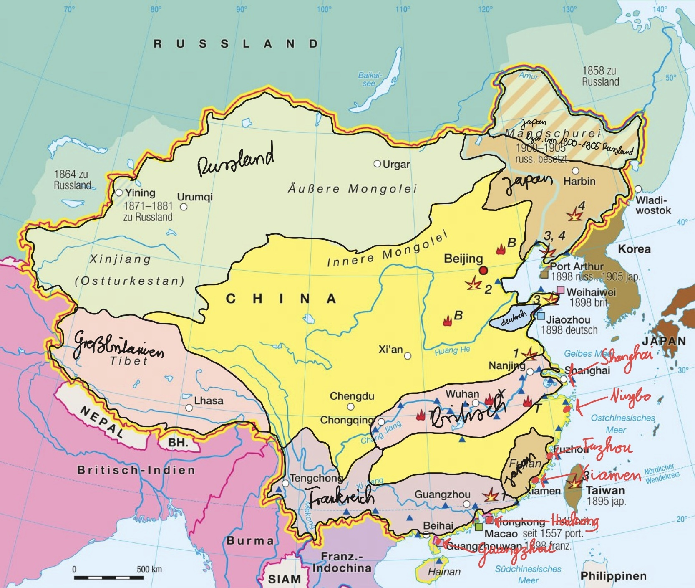

Konzessionen sind klar eingegrenzte Gebiete unter ausländischer Führung. Das heißt, dass die Kolonialmächte wie zum Beispiel Frankreich und Großbritannien dort eigene Stadtteile hatten. In diesen Stadtteilen galten keine chinesischen Gesetze, weil sie von den Kolonialmächten verwaltet wurden.
Außerdem dienten diese Stadtteile zur Durchsetzung wirtschaftlicher und politischer Interessen der europäischen Mächte. Für China waren Konzessionen ein deutliches Zeichen von Kontrollverlust und Abhängigkeit.
Durch die Vertragshäfen konnten die Europäer sehr gut Handel betreiben, was ihre Macht in China stärkte. Besonders im Zusammenhang mit dem Opiumhandel entstanden große Gewinne. Damit wurde der Verkauf von Opium weiter gefördert.
Die Häfen ermöglichten außerdem erstmals einen dauerhaften Zugang zum chinesischen Markt. China wurde teilweise gezwungen, mit den Europäern zu handeln, obwohl das nicht im Interesse der chinesischen Regierung lag. Gleichzeitig entstanden dort eigene Machtzentren der Kolonialmächte, in denen europäische Gesetze statt chinesischer Regeln galten.
Die Vertragshäfen standen deshalb nicht nur für Handel, sondern auch für einen ständigen Zugang zu China über den Seeweg.
China wurde zwar de facto stark beherrscht, vor allem durch ungleiche Verträge, Vertragshäfen, Konzessionen und Interessensphären. Trotzdem kam es nicht zu einer vollständigen kolonialen Aufteilung des Landes.
Ein Grund war die Konkurrenz zwischen den Kolonialmächten: Jede Macht wollte Vorteile für sich, wodurch sie sich gegenseitig blockierten. Zudem ist China sehr groß, was eine vollständige Besetzung schwierig, zeitaufwendig und teuer gemacht hätte.
China versuchte außerdem, große Kriege zu vermeiden und ausländische Interessen zeitweise taktisch zu nutzen, um Zeit zu gewinnen. Gleichzeitig gab es im Land starken Widerstand gegen die fremde Kontrolle. Ein bekanntes Beispiel ist der Boxeraufstand, bei dem Chinesen gegen Kolonialmächte und deren Unterstützer kämpften.
Diese Faktoren zusammen machten es für die Kolonialmächte sehr schwer, China vollständig zu kolonisieren.

Impressum: Joshua Punkt, Lino Napoleone, Prälat-Schofer-Straße 1, 77955 Ettenheim, Deutschland. Dieses Projekt wurde im Rahmen eines Schulprojekts erstellt. Haftungsausschluss: Die Inhalte unserer Website wurden mit größter Sorgfalt erstellt. Für die Richtigkeit, Vollständigkeit und Aktualität der Inhalte können wir jedoch keine Gewähr übernehmen.